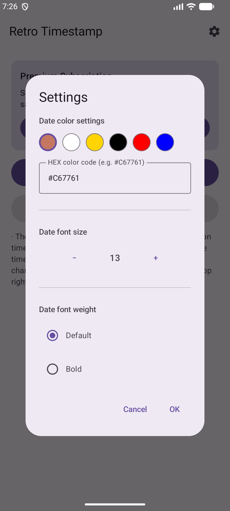

Android
레트로 타임스탬프
사진의 EXIF 날짜를 바탕으로 추억을 닮은 레트로 스탬프를 더합니다.



사진의 날짜 정보를 읽어오는 흐름
사진에 기록된 EXIF 날짜를 기준으로 레트로한 시간 스탬프를 더해, 그때의 순간을 사진 위에 남기는 Android 앱입니다.
한 장부터 여러 장까지
사진 한 장을 고른 뒤 미리보기에서 결과를 확인하고, 날짜·색상·폰트 크기·굵기를 조정해 원하는 분위기의 스탬프를 만들 수 있습니다.
- EXIF DateTimeOriginal 우선 읽기
- MediaStore·문서 메타데이터 보완
- 날짜가 없을 때 수동·현재 날짜 선택
- 스탬프 색상·폰트 크기·굵기 조정
- Premium 다중 사진 순차 처리
무료 사용자는 한 장 사진 흐름에서 리워드 광고 보상 뒤 저장할 수 있고, Premium 사용자는 여러 장을 선택해 Batch 화면에서 순차 저장할 수 있습니다.
날짜 정보가 없을 때
EXIF와 파일 메타데이터에서 날짜를 찾지 못하면 수동 입력 또는 현재 날짜를 선택해 다시 처리할 수 있어, 오래된 사진도 원하는 방식으로 정리할 수 있습니다.